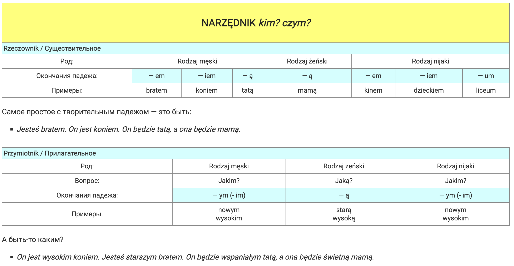

lekcja 8 - narzędnik l.mn. rzeczowników i przymiotników przymiotniki odrzeczownikowe
(творительный падеж множественного числа существительные и прилагательные)
\
Творительный падеж в польском языке

Krok po kroku A1 Урок 8, часть 1
Krok po kroku A1 Урок 8, часть 3